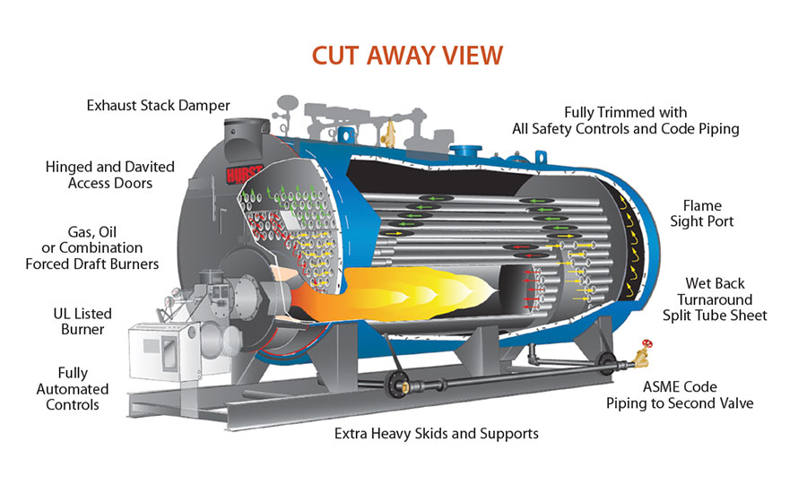

Articles
Boilers
The boiler plant (boiler) - the construction, in which the heating of the working fluid (coolant) (usually water) for heating or steam supply system, located in a plant room. Boilers connect with consumers by means of a heating and / or steam lines. The main device is a steam boiler, fire tube and / or hot water boilers. Boilers are used for centralized heat - and steam supply or local supply if the boiler room of the local values (within a private house, quarters). Boiler - a complex of technologically connected thermal power plants located in isolated industrial buildings, built, adjoined or overbuilt areas with boilers, water heaters (including non-traditional settings method for producing thermal energy) and boiler accessories, designed to generate heat. Boilers can be classified by type of location, by type of fuel used, the type of installed boilers for thermal load destination, the categories heat supply reliability. By type of arrangement boilers are detached, roof, built into the building for other purposes, Attached drugogonaznacheniya buildings, modular design, frame pallet. According to the type of fuel used are gas, liquid fuel (fuel oil, diesel, waste oil), solid fuel (wood pellets, wood, coke, lignite and hard coal, briquettes), the combined multi-fuel boiler. By type of boiler installed boiler distinguish steam, hot water, mixed, diathermic. By appointment heat load heating (heating, ventilation, hot water) Boilers, industrial (steam and / or hot water for process consumers) boilers, mixed (provision and the heating and the production function) boiler.
- In the category of heat supply reliability:
- the first category - boilers are the only source of heat consumers of the first category (no interruption in the supply of the calculated amount of heat);
- the second category - boilers designed to allow consumers heat supply reduction for the period of repair, but not more than 54 hours;
- the third category - all other consumers.